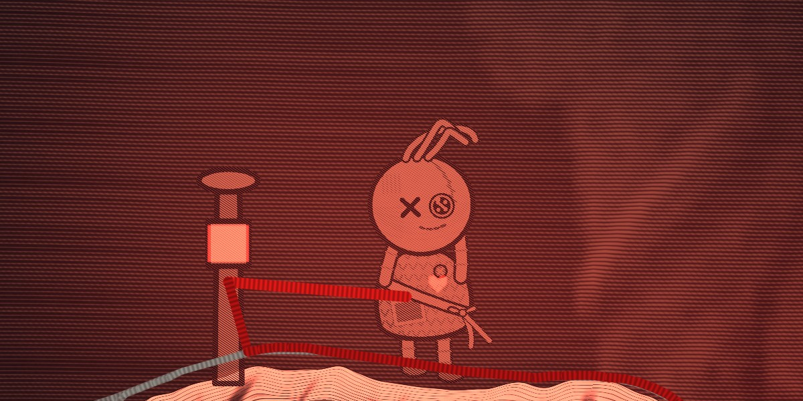
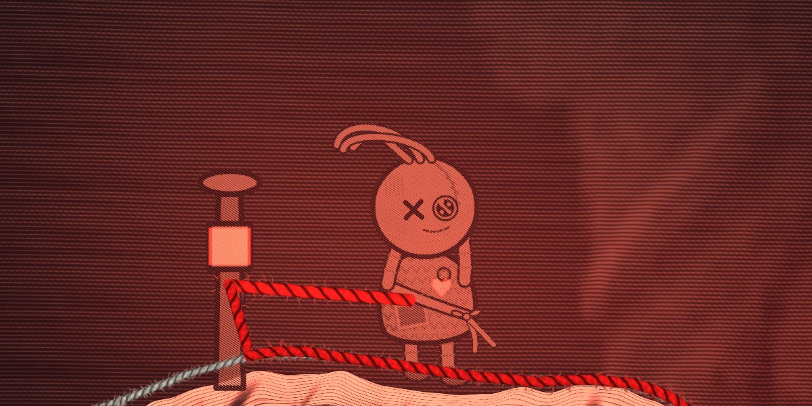
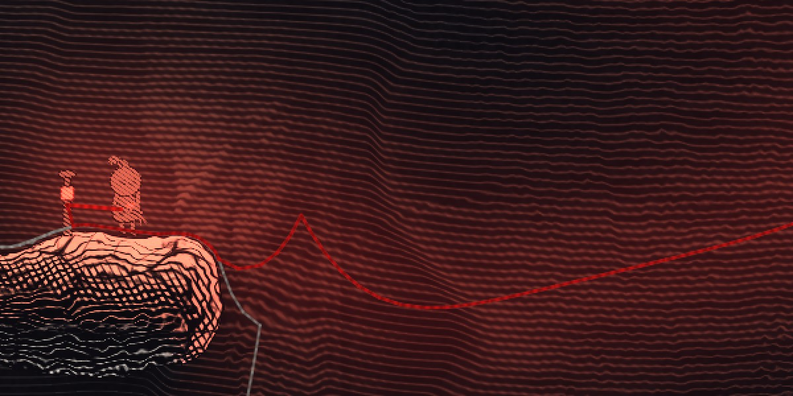
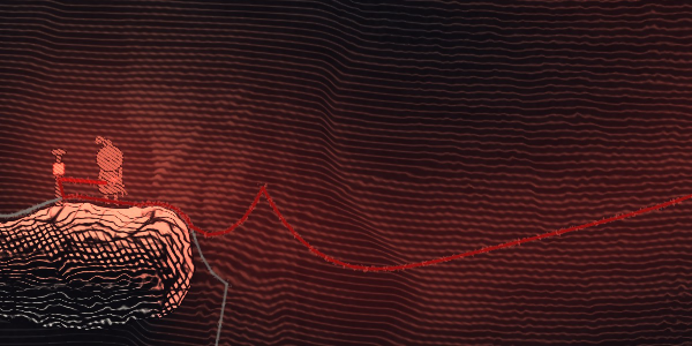
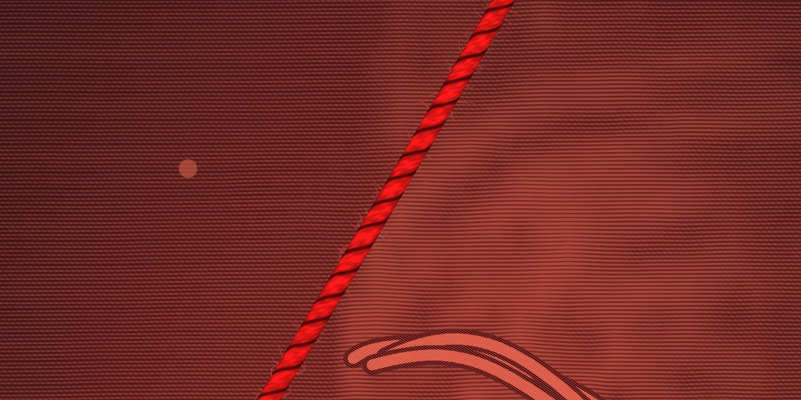

Spindledeep · changes of 26 November, fourth batch
The Yarn Itself
Two plies twisted togetherand a few loose hairs
The red thread is now drawn as real yarn: two plies twisted round each other, rounded and lit from above, with fibres running along the twist and short stray hairs standing off its sides. It used to be a flat red band with faint stripes. The knitter's grey thread gets the same, though it is so thin that mostly the fuzz shows.
Thread, Not a Line
Can you slightly improve the visuals of the thread itself? It is currently just a line with some stripes, can you make it more detailed so that it actually looks like a thread? Maybe some tiny hairs out of it or something, idk


BeforeAfter
Close in, at pole 1: the thread to the pole and along the ledge


BeforeAfter
The normal playing view, enlarged 2× so the pixels can be seen

As close as the camera gets: the plies, the fibres, the hairs.
The twist: two plies spiral round each other, with a dark seam where they meet. Each ply is lit along its middle and the strand is rounded, catching a little more light on top.
Fibres: faint streaks running along each ply, so it reads as spun wool, not plastic.
Hairs: short loose fibres curling off both sides, thinning to the tip and a little paler than the strand, as loose fibres catch the light.
They belong to the thread. The twist and every hair are fixed to a point on the yarn, so they travel with it as it slides and pays out. They no longer slide when the camera moves, as the old stripes did.
Size and brightness: the thread is a little thicker (about 4 px across at normal zoom on your 2560×1080 screen, was 3.5) and just as bright on average as the old line. It is the light you carry, so it must not dim. When it is too thin to show its make, it fades back to a plain line, so nothing flickers.
Joints: where two pieces of the thread meet, the pattern runs on without a seam.
Nothing about how the thread behaves changed, only how it is drawn. A run from the cottage to the top of the Loom gave no errors. The shots on this page were taken at your screen's size; before, the test window was limited to 960×540.